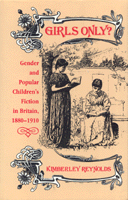

<body bgcolor="#FFFFFF" text="#000000" link="#0000FF" vlink="#CC0000" alink="#CC0000"><center><hr width="350" size="1" align="center" noshade>Explores the relationship between notions of gender difference and social practice<hr width="350" size="1" align="center" noshade><p><a href="https://cdcshoppingcart.uchicago.edu/Cart/ChicagoBook.aspx?ISBN=9780877227373&&PRESS=temple" target="_top">Buy this book!</a> | <a href="https://cdcshoppingcart.uchicago.edu/Cart/Cart.aspx?PRESS=temple" target="_top">View Cart</a> | <a href="https://cdcshoppingcart.uchicago.edu/Cart/Cart.aspx?PRESS=temple" target="_top">Check Out</a></p><p></p></center><!--none//--><h1>Girls Only?</h1>
<H2>Gender and Popular Children's Fiction in Britain, 1880-1910</H2>
<h3>Kimberly Reynolds</h3>
<P>cloth 0-87722-737-3 $34.50, Aug 90, <FONT COLOR=#990033>Out of Stock Unavailable</FONT>
<BR> 208 pp
<BR>&nbsp;<br>Restricted: United States and its dependencies, the Philippine Islands, and Canada
</P><BLOCKQUOTE><I>"[Reynolds] engages a number of significant issues in social history and literary criticism, and enlarges important contemporary debates. [She] smoothly integrates history of publishing and distribution, analysis of shifting prescriptions for male and female behavior, and close readings of key examples of children's literature."</I>
<br>&#151<b>Barbara Melosh</b><I></I></BLOCKQUOTE>
<p>In this study of early juvenile fiction in Britain. Kimberley Reynolds considers the cultural significance of the expansion of reading in the late nineteenth century as well as early reading habits on the development of gender identities. Comparing the content of popular literature prescribed for children in Victorian England and drawing on current critical theory, she explores the relationship between notions of gender difference and social practice.
<p><I>Girls Only?</I> discusses how the social, historical, and economic conditions of the time affected the production of works of popular fiction. While focusing on nineteenth-century children�s fiction, Reynolds also addresses children�s literature today. Her argument demonstrates how publishing practices, established at the end of the last century in response to specific circumstances, have been perpetuated. The result is that children�s fiction, a major part of one�s earliest experience of language, reconfirms notions of passive femininity and dominant masculinity in its young readers.
<BR>&nbsp;<H2>About the Author(s)</H2>
<P><b>Kimberley Reynolds</b> is a Lecturer at Ealing College of Higher Education.</P>
<BR><H2>Subject Categories</H2>
<p><A HREF="/tempress/history.html" TARGET="_top">History</a>
<BR><A HREF="/tempress/literature.html" TARGET="_top">Literature and Drama</a>
</p>
<p align="center"><a href="https://cdcshoppingcart.uchicago.edu/Cart/ChicagoBook.aspx?ISBN=9780877227373&&PRESS=temple" target="_top">Buy this book!</a> | <a href="https://cdcshoppingcart.uchicago.edu/Cart/Cart.aspx?PRESS=temple" target="_top">View Cart</a> | <a href="https://cdcshoppingcart.uchicago.edu/Cart/Cart.aspx?PRESS=temple" target="_top">Check Out</a></p><p><font face="Arial" size="1"><a href="copyright.html" onMouseOver="window.status='Web Copyright Policy';return true;" onMouseOut="window.status=''" title="Web Copyright Policy">&copy;</a> 2015 <a href="http://www.temple.edu" target="new" onMouseOver="window.status='Link to Temple University home page';return true;" onMouseOut="window.status=''" title="Link to Temple University home page">Temple University</a>. All Rights Reserved. http://www.temple.edu/tempress/titles/786_reg.html</font></p>